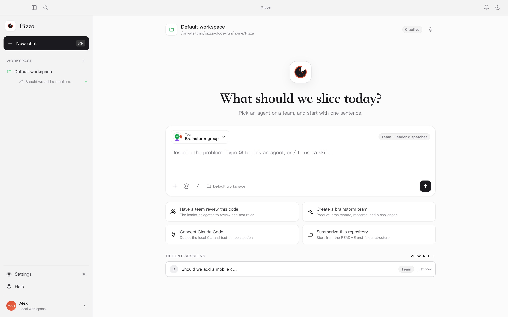
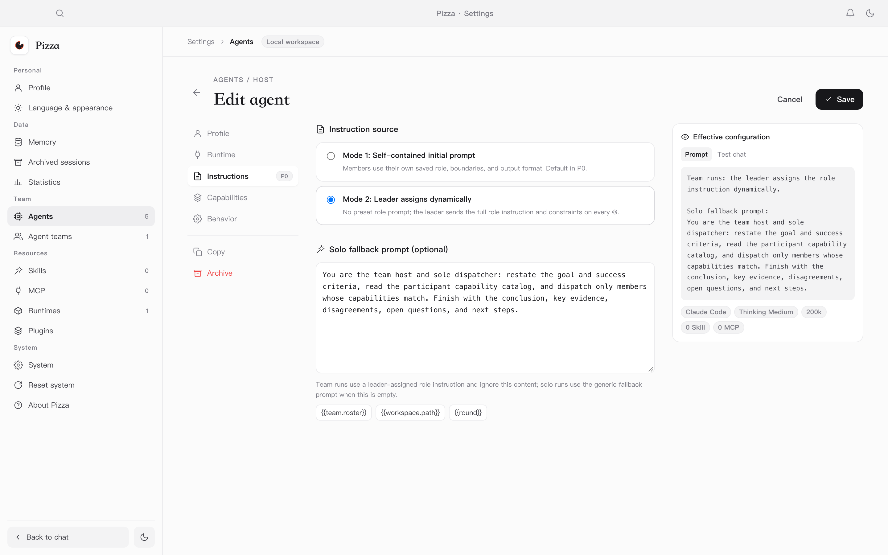
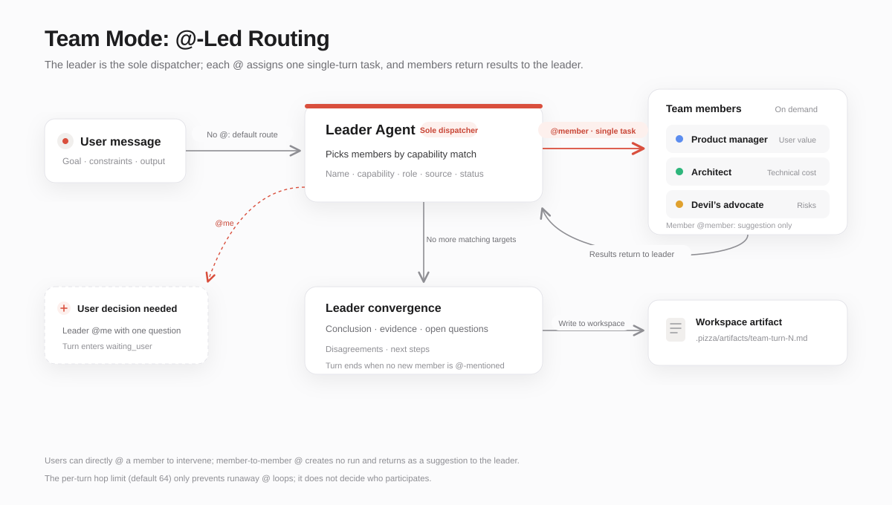
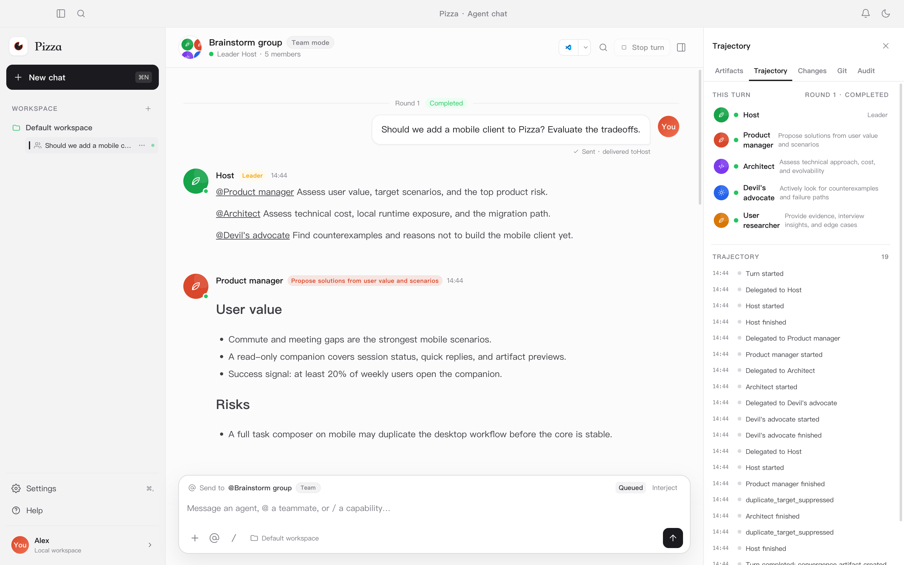
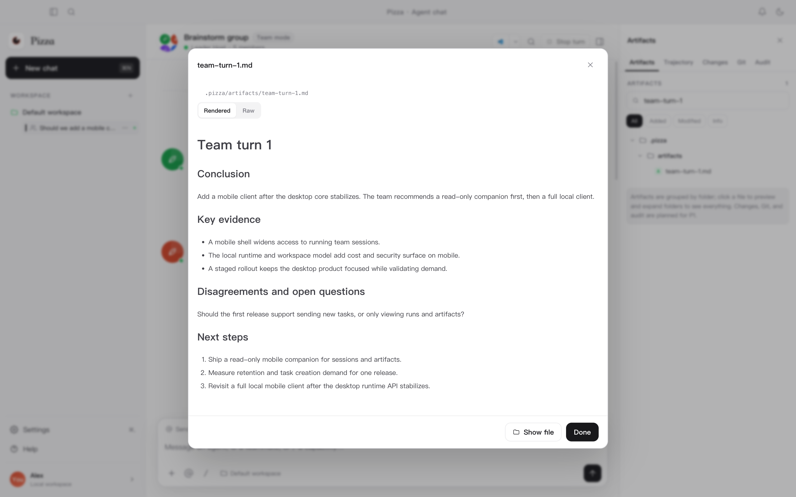
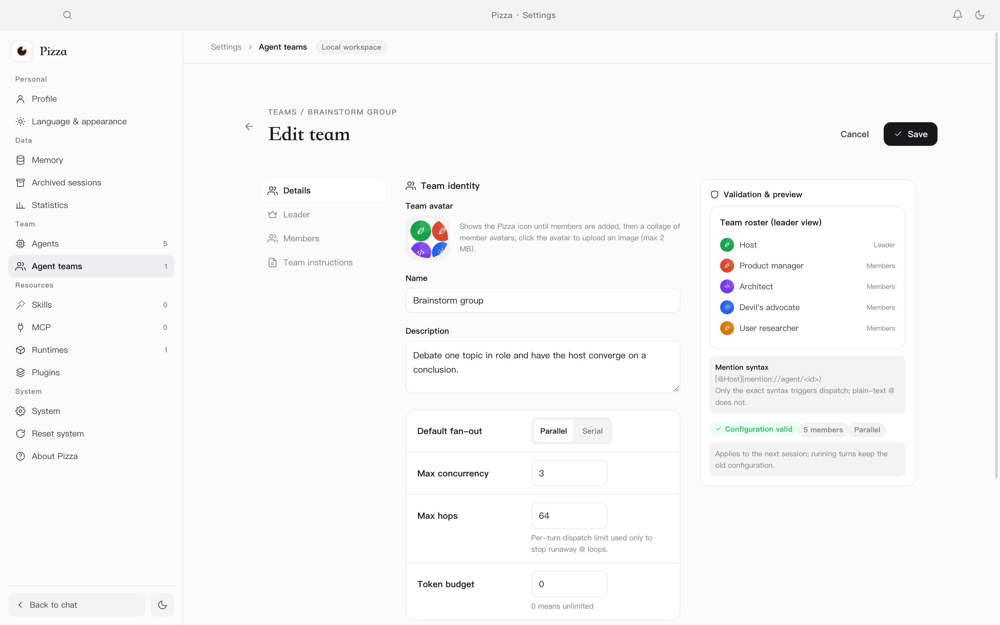

A local-first agent workspace
Pizza brings models, agents, and team structure into one desktop app. It does not force a single “best” model. Instead, it lets you combine agents with different strengths and costs, and lets a leader decide who takes the field.
Same model, different agent
Tools, prompts, and runtime behavior change the result. Pizza treats an agent as a configurable, reusable unit.
Models have different strengths
Put a strong planner in the leader seat, then add agents for code, research, or writing and match them to the task.
Capability tracks price
Stronger models lead. Lighter models participate. Team structure becomes a way to control cost.
Two working modes
Talk to one agent directly
Best for clear, continuous work. Streaming output, tool calls, stop, retry, and run traces live in one conversation.
Let a leader organize several agents
Best for decomposition, parallel exploration, or cross-checking. The leader routes work with @ and converges the result into an artifact.
Core capabilities
- Solo and team conversation modes
- Leader-assigned role instructions
- Claude Code, Codex, DSH and more runtimes
- Skill imports, MCP setup, and tool approvals
- Sessions, runs, and artifacts stored in local SQLite
- Streaming, stop, retry, and concurrency limits
- Workspace file indexing and Markdown preview
- Light / dark themes and Chinese / English UI

Install and launch
Installers do not bundle or download model runtimes. Install and sign in to your runtime using its official documentation first.
Requirements
- macOS 13 or later
- Windows 10 or later
- A mainstream x64 Linux distribution (AppImage / deb)
- At least one local agent runtime, or a generic ACP / CLI runtime
- A writable data directory; the default is
~/.pizza
dmg
Open Pizza-<version>-arm64.dmg and drag Pizza into Applications. If macOS warns about an unidentified developer, allow it in Privacy & Security.
Setup / zip
Run Pizza-Setup-<version>.exe, or unzip and launch the app. If SmartScreen warns, choose “More info → Run anyway”.
AppImage / deb
Make the AppImage executable and run it, or install the deb with your system package manager.
First launch
-
Detect local runtimes
Select “Start detection”. Pizza only runs
which/whereand--version; it never executes unknown scripts. -
Select and import
Check the installed runtimes and choose “Import selected”. Pizza tests each connection and registers the ones that pass.
-
Create your first agent
After a successful import, create the default assistant or configure model, thinking level, and concurrency later.
~/.pizza by default.
You can move the data directory in Settings or set PIZZA_DATA_DIR.
Supported runtimes
A runtime is how Pizza executes work. It can be a CLI such as Claude Code or Codex, or a local service that speaks ACP. Different runtimes can be bound to different models and capabilities.
| Runtime | Connection | Notes |
|---|---|---|
| Claude Code | CLI · stream-json | Streaming, tool calls, session resume, and model discovery |
| Codex | CLI · app-server | Thread reuse, turn/interrupt, and structured events |
| Pi | CLI · session files | Restores context from session files; good for local-model workflows |
| Oh My Pi | CLI · Pi protocol | Reuses the Pi protocol with native OMP session files |
| DeepSeek Harness | ACP · dsh | Uses the ACP profile by default; custom JSONL profiles can switch to CLI |
| Hermes | ACP · stdio | Connects to Hermes Agent over ACP stdio |
| OpenCode | ACP · stdio | Connects through opencode acp |
| Qoder CN | CLI · stream-json | Uses the Claude-compatible event protocol with Qoder session and model flags |
| Gemini CLI | ACP · stdio | Connects through gemini --acp |
| Kimi Code | CLI · stream-json | Parses Kimi Code assistant text, tool calls, and resume hints |
| Generic ACP / Custom CLI | ACP / CLI | Provide a command or address for other local runtimes |
Detection and manual setup
- On first launch Pizza scans common install locations, including Homebrew, nvm, fnm, bun, pnpm,
~/.local/bin,~/.opencode/bin,~/.qoder-cn/entry, and~/.kimi-code/bin. - Select any number of detected runtimes and import them together. Each one is tested for real; only passing runtimes are registered.
- To set a custom command, arguments, environment, or timeout, use Settings → Runtimes → Add runtime.
which claude works in a
terminal, or enter its absolute path manually.
Create an agent
An agent binds a runtime, a prompt, and a capability boundary. Open Settings → Agents → New agent, then enter a name, description, runtime, and initial prompt. Optionally choose a model, thinking level, and concurrency limit.
The description is the capability card
Agent descriptions become part of the team’s capability catalog, so the leader can decide who fits the task. Say what the agent is good at, what it produces, and what it should avoid; keyword stuffing is less useful.
Two instruction sources
Saved initial prompt
The member uses its own saved role, boundaries, and output format. The leader only describes the task. Best for stable responsibilities.
Leader-assigned instructions
No fixed role prompt. Each time the leader routes work with @, it sends the full role instruction and constraints. Best for capability-tiered teams.

Team collaboration: @-routing
Team mode is not a group chat. It makes the leader the only dispatch hub. Members register capabilities like skills, and the leader decides who enters the field based on the task.
One single-turn task at a time
Every @ carries a goal, input, and completion criteria. The member returns the result to the leader, who decides whether to dispatch more or converge.
Members do not connect directly
An @ between members does not start another run. It is a suggestion carried back to the leader, which avoids cross-member loops and runaway parallelism.
How messages move

Run trace and convergence artifact
The trace panel records participants, each dispatch, run status, user waits, and convergence events. When the leader
summarizes, the structured result is written to .pizza/artifacts/ in the workspace and appears in the artifact panel.


How users step in
- Mention a member with
@in the input box to direct a message to them. - When the leader mentions
@me, the turn waits for your reply. - The default hop guard is 64. It only prevents runaway
@loops; whether to keep debating and when to converge remains the leader’s call.

Daily use
Solo conversation
Return to the home screen, pick an agent, and send a task. You can watch streaming output and tool calls, stop the run, or retry.
Team conversation
Pick a team and send a task. If you do not mention anyone, the message goes to the leader by default. The leader selects members from the capability catalog and sends each a single-turn task. Mention a member or answer the leader when you want to step in.
Settings and data
- Settings → Language & appearance switches the theme and UI language.
- Settings → Runtimes / Skills / MCP manages runtimes and capability access.
- Settings → Archived sessions restores or permanently deletes sessions.
- Data lives in
~/.pizzaby default; migrate it in Settings or setPIZZA_DATA_DIR.
Keyboard shortcuts
| Shortcut | Action |
|---|---|
⌘K | Open the command palette |
⌘N | New conversation |
⌘, | Open settings |
Build from source
Requires Node.js 22+ and npm.
npm install
npm run dev # development
npm run build # production build
npm run package:mac # macOS dmg/zip
npm run package:win # Windows nsis/zip
npm run package:linux # Linux AppImage/debBuild output goes to release/. For development, test, and packaging details, see docs/USAGE.md.
Frequently asked questions
Pizza cannot detect my installed runtime.
Check that which claude works in a terminal, then restart Pizza or select detect again. If it is still missing, enter its absolute path manually in Settings → Runtimes.
The connection test passes, but chatting fails.
Check whether the runtime needs a separate sign-in and whether the selected model is available. CLI flags are not identical across products; Pizza uses the matching flags and event parser for each known runtime.
Why is deleting an agent blocked?
An agent that is still referenced by active sessions cannot be permanently deleted. Archive the agent, or archive / delete the related sessions first.
When does a team turn end?
The leader decides. When it stops mentioning new members and writes a summary, the turn ends and the structured summary is saved as a workspace artifact.
Where is my data stored?
By default in ~/.pizza. Sessions, runs, messages, and artifacts remain on this machine and are not uploaded to a Pizza server.
Open-source license
Pizza is released under the Apache License 2.0. You may use, modify, and distribute the project, provided you keep the copyright and license notices and include a copy of the license when distributing.